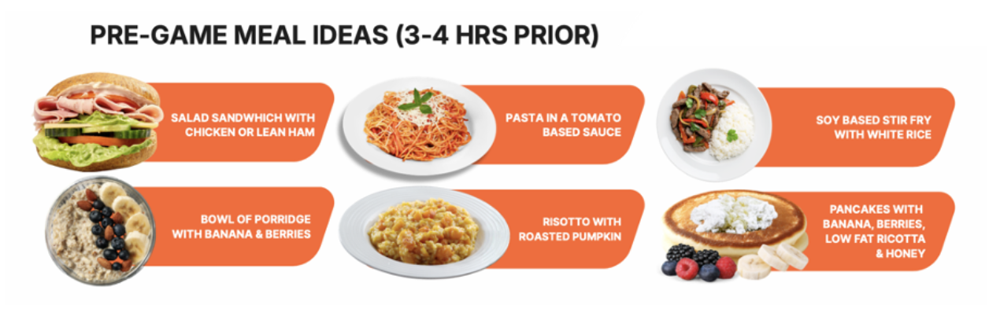
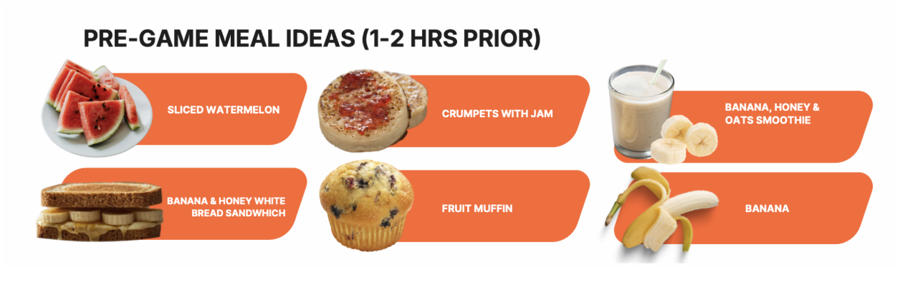

Pre-Game Meals
The night before and morning of a game are crucial for ensuring glycogen stores are topped up and you're ready to perform. Appetite suppression and routine disruptions on game day can reduce food intake, making planned carbohydrate-based strategies important to maintain energy availability (Jenner et al., 2021).
Meal Timing Guideline
Sports Dietitians Australia recommends that the last main meal should be consumed 3-4 hours prior to the start of the match. This meal should contain carbohydrates, a small amount of protein (to prevent hunger), and be low in fat and fibre to avoid stomach discomfort (Sports Dietitians Australia, 2025).
Pre-Game Meal Ideas (3-4 hours prior)
Focus on carbohydrate-rich meals that are familiar and easy to digest:

- Pasta in tomato sauce
- Stir fry with rice
- Risotto with pumpkin
- Porridge with fruit
- Chicken sandwich
- Pancakes with honey
Pre-Game Snacks (1-2 hours prior)

- Banana
- Watermelon
- Crumpets with jam
- Fruit muffin
Real Player Example: Christian Petracca – Night Game (Madden, 2022)
Melbourne midfielder Christian Petracca's approach to a night game:
- Night Before: Carb-heavy meal (rice or pasta – more carbs than meat). Apple crumble for dessert. "Likes to eat heavier as appetite may be reduced on game day due to nerves. Easier to eat more the night before without feeling heavy during play."
- Breakfast: Cereal, toast, and orange juice
- Lunch: 2-3 chicken wraps throughout the day
- Pre-Game: Banana and Red Bull
During-Game Fueling
AFL matches are high-intensity and last approximately 2 hours. Fueling during quarter-time and half-time breaks is important for maintaining performance in the final quarters (Burke et al., 2011).
Quarter-Time & Half-Time Options
| Option | Benefits |
|---|---|
| Sports drink (Gatorade, Powerade) | Carbs + fluids + electrolytes in one |
| Energy gels | Quick, concentrated carbohydrates |
| Banana or orange slices | Natural carbs, easy to digest |
| Lollies (snakes, jelly beans) | Rapid energy, familiar |
Post-Game Recovery
The period immediately after a game is critical for kickstarting recovery. Aim to eat within 30-60 minutes of the final siren.
Post-Game Nutrition Goals
- Refuel: Replenish muscle glycogen with carbohydrates (1-1.2g/kg body weight)
- Repair: Support muscle repair with protein (20-40g)
- Rehydrate: Replace fluid and electrolyte losses (see Hydration page)
Immediate options (0-60 mins): Recovery shake, chocolate milk, sandwich with protein, fruit and yoghurt
Post-game meal (1-2 hours): Complete meal with carbohydrates, protein, and vegetables
For night game recovery strategies and sleep-supporting nutrition, see the Recovery page.
References
- Burke, L. M., et al. (2011). Carbohydrates for training and competition. Journal of Sports Sciences, 29(sup1), S17-S27.
- Jenner, S. L., Buckley, G. L., Belski, R., Devlin, B. L., & Forsyth, A. K. (2021). Dietary intakes of professional and semi-professional team sport athletes do not meet sport nutrition recommendations. Nutrients, 13(6), 1919.
- Madden, S. (2022). Christian Petracca: A day on a plate. AFL.com.au.
- Sports Dietitians Australia. (2025). Game day nutrition for team sports. Sports Dietitians Australia.